Estado de la implementación y resultados hasta EXP-030, con las corridas del pipeline sobre los documentales de la BBC y dos videos de prueba de YouTube.
En un video largo los temas vuelven. Un conflicto reaparece a lo largo de una película, un punto de agenda se retoma en otra parte de una reunión y una especie regresa en distintos tramos de un documental. La segmentación de escenas, el capitulado y el resumen automático entregan intervalos contiguos o una selección de fragmentos, así que un tema que vuelve termina partido en pedazos sin relación entre sí. Fusionar las modalidades en un solo vector agrava el problema, porque se pierde qué señal sostuvo cada decisión y una señal ausente se trata como si aportara información.
La pregunta de la tesis es cómo organizar y describir segmentos relacionados y no contiguos de un video largo, conservando la evidencia de cada señal y produciendo versiones distintas del contenido. La hipótesis general es que el consenso entre decisiones independientes (con abstención y enlace promedio) supera tanto a la fusión de representaciones como a una partición contigua.
Fuera de alcance: CAVA no afirma entender la trama ni identificar personajes de forma fiable, y no evalúa la calidad subjetiva de las versiones. En películas, "mismo tópico" se aproxima con personajes compartidos (Jaccard del reparto).
Cada línea de trabajo resuelve una parte del problema. Ninguna agrupa segmentos no contiguos y a la vez conserva la procedencia de cada señal.
| Área | Trabajos | Qué entrega | Qué le falta para este problema |
|---|---|---|---|
| Resumen de video | SumMe, TVSum, A2Summ | Fragmentos importantes | No agrupa lo que regresa ni explica por qué se eligió cada fragmento |
| Escenas y capítulos | TransNetV2, ShotCoL, SCRL, BaSSL, LGSS, MEGA, VidChapters-7M | Fronteras e intervalos contiguos | Un tema que vuelve queda en capítulos separados |
| Tópicos en texto y reuniones | TextTiling, Galley et al. 2003, corpus AMI | Segmentación temática del discurso | Contigua y solo textual |
| Identidad de hablante | x-vectors, WavLM, pyannote, VoxConverse | Quién habla y cuándo | Dice quién habla; el tema queda fuera |
| Fusión y consenso | Baltrušaitis et al., Strehl y Ghosh, Fred y Jain | Fusión temprana o tardía; consenso de clusterings | La fusión oculta la evidencia; el consenso no se ha aplicado a video largo con abstención |
| VLMs como instrumento | SigLIP, Qwen2.5-VL, Scene-VLM, Whisper, BGE | Embeddings, descripciones y transcripción | Describen el contenido; la estructura la tiene que decidir otro componente |
Antecedentes del grupo: A2Summ-X mejoró el F1 en TVSum con una rama textual (ΔF1 = 0.033, p = 0.014, N = 25) y mostró que en la fusión una señal domina a las demás, lo que llevó a mantener decisiones separadas en CAVA. SegLoop llegó a F1 53.19 y AP 55.33 en fronteras de escena con un ensamble; esas métricas no miden recurrencia temática.
El pipeline completo está implementado y corre de punta a punta sobre un video: desde el archivo de entrada hasta los clips de cada versión. Cada etapa guarda su avance, así que una corrida interrumpida retoma donde quedó. El diagrama muestra las etapas en el orden en que se ejecutan.
Cada señal compara pares de unidades y vota "mismo tópico" solo si supera su propio percentil. Si una señal no tiene datos (una unidad sin habla, por ejemplo), se abstiene en vez de votar en contra. Hacen falta dos votos para unir unidades. El mapa resultante guarda qué señales votaron cada enlace, y con eso cada tópico y cada retorno quedan trazables.
Cada corrida deja además un registro pensado para entrenamiento posterior: las versiones exactas de los modelos usados y una fila por clip con su tópico, duración y posición. Las recompensas se calculan fuera del pipeline (EXP-031), así que el GT nunca toca el producto.
Todas las comparaciones usan el video como unidad: diferencia pareada por video y z = media / error estándar, con aceptación si z > 2. Las hipótesis se registraron antes de correr la evaluación de confirmación.
| Exp. | Pregunta | Resultado clave | Veredicto |
|---|---|---|---|
| 020a | ¿La voz identifica hablantes en AMI mejor que lo visual? | AUC 0.72 frente a 0.56; réplica en reuniones nuevas +0.188 (z 12.1) | validado |
| 020b | Mapa de tópicos en reuniones AMI | Frente a contiguo −0.155 (z −2.9): salen 18 a 20 tópicos donde hay 7 | no validado |
| 021 | Granularidad por perfil de contenido | No inferior a contiguo (z −1.6); supera a fusión +0.089 (z 3.4) | parcial |
| 022 | Regla para contar hablantes | Ward + BIC: ARI 0.297 frente a 0.080 visual; BIC mejor que silueta (z 3.5) | validado |
| 023 | Votante de turnos de habla | MCC 0.234; supera a voz (z 2.32) y fusión (z 3.52), empata con contiguo (z 0.27) | parcial |
| 024 | Pesos de voto aprendidos | +0.031 ± 0.026 (z 1.22) | no validado |
| 025 | Documentales BBC | M_local 0.413; frente a contiguo +0.174 (z 6.11), frente a fusión +0.126 (z 7.41). F1 de fronteras: visual sola 0.48, CAVA 0.40 | validado |
| 026 | Voz con un solo narrador | Error reducido +0.89 (z 2.29), pero quedan 5.7 grupos efectivos en vez de 1 | alcance limitado |
| 027 | Ajuste de fronteras a cortes visuales (91 películas) | M_local 0.226 → 0.317 (z 26.6); F1 0.434 → 0.488. La visual sola sigue en 0.535 | validado |
| 028 | x-vector WavLM frente a rasgos de voz | VoxConverse AUC 0.735 → 0.962, ARI 0.249 → 0.635; AMI ARI 0.286 → 0.731 | validado |
| 029 | Detector de un solo hablante | Error en K +0.155 (z 2.60), sin falsos positivos en AMI; en BBC detecta 0 de 11 | acotado |
| 030 | Parakeet en lugar de Whisper | Más habla perdida (0.060 frente a 0.015) y BBC −0.022; se queda Whisper | no validado |
Son 540 minutos de audio en italiano, unos 49 por episodio, en unidades de 5 s (6 501 en total). Los episodios 01 a 04 se usaron para desarrollo y del 05 al 11 para confirmación.
| Ep. | min | unidades | tópicos | con retorno | grupos de voz | clips |
|---|---|---|---|---|---|---|
| 01 | 49.3 | 591 | 32 | 15 | 4 | 62 |
| 02 | 48.1 | 577 | 34 | 13 | 5 | 66 |
| 03 | 49.3 | 592 | 33 | 13 | 4 | 65 |
| 04 | 49.0 | 589 | 34 | 14 | 5 | 67 |
| 05 | 49.2 | 591 | 32 | 15 | 7 | 67 |
| 06 | 49.3 | 592 | 38 | 12 | 8 | 67 |
| 07 | 49.3 | 592 | 34 | 14 | 4 | 70 |
| 08 | 49.2 | 591 | 34 | 12 | 5 | 69 |
| 09 | 49.2 | 591 | 37 | 10 | 4 | 65 |
| 10 | 48.9 | 587 | 32 | 13 | 7 | 62 |
| 11 | 49.0 | 588 | 35 | 13 | 5 | 70 |
Cada episodio tiene un solo narrador, pero el pipeline encuentra entre 4 y 8 grupos de voz. Estos grupos responden a la escena acústica (música, ambiente) y no a personas, y el detector de narrador único todavía no se activa en BBC. Con un filtro de habla Parakeet ∩ Whisper, el detector reconoce un narrador en 10 de 11 episodios (resultado secundario de EXP-030, sin GT).
ep. 05 · tópico 13Higueras como fuente de alimento en la selva
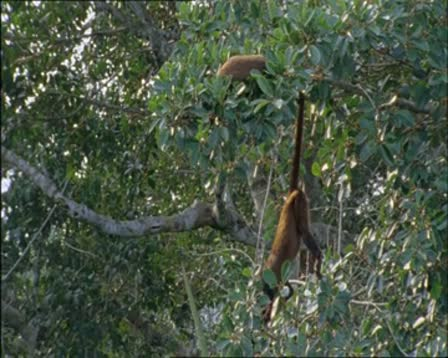
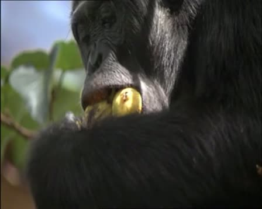
ep. 05 · tópico 11Crecimiento de plantas y supervivencia de chimpancés
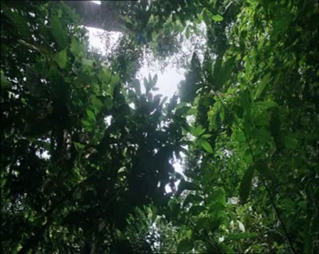
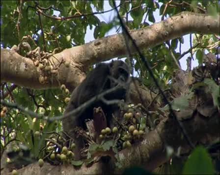
El tópico 13 une dos tramos separados por media hora donde se ve la misma fuente de alimento. En el 11 el primer tramo muestra el dosel, sin chimpancés, porque la etiqueta resume el tópico entero y un tramo suelto puede verse distinto.
Este video tiene un solo narrador que cuenta la película sobre sus imágenes, un caso cercano al documental. Se procesó con el pipeline completo (perfil documental) en 9 minutos de GPU.
| Unidades de 5 s | 422 | Tópicos (nivel por defecto) | 28, 8 con retorno |
| Tópicos (nivel fino) | 71, 1 con retorno | Grupos de voz | 1 (V1, 100 %) |
| Versiones generadas | 7 | Clips cortados | 47 |
| Recap | 60 s | Highlights (10 %) | 210 s de 211 |
| Capítulos completos | 28 clips, 22.6 min | Frames extraídos | 581 |
tópico 24Recuperación de las Gemas del Infinito y sus consecuencias
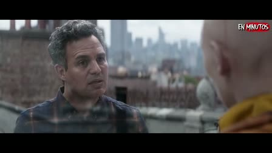
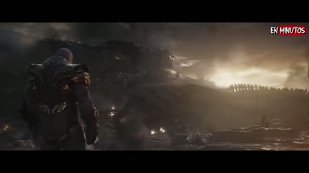
tópico 6Planes para enfrentar a Thanos y recuperar las gemas
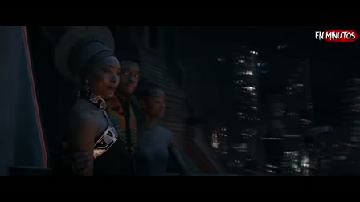
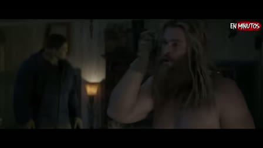
El tópico 6 es el más largo (535 s en 6 tramos) y junta escenas que se ven muy distintas, como muestran estos dos frames. Un retorno indica que un tema se retoma en el video; no debe presentarse como un hilo de trama reconocido.
Es una conversación de tres horas entre dos personas en un set fijo. Aquí se corrió el demo liviano (Whisper tiny y SigLIP en ventanas de 10 s), no el pipeline completo. No hay GT, así que estas cifras describen la salida sin medir su precisión.
| Ventanas de 10 s | 1 077 | Segmentos ASR / palabras | 4 022 / 35 932 |
| Cortes de consenso | 78 (79 tramos) | Duración de tramos | mediana 1:30, media 2:16 |
| Tramo más corto / más largo | 0:20 / 10:00 | Cortes propuestos texto / visual | 172 / 189 |
| Coinciden a ±10 s / ±20 s | 73 / 95 | Grupos temáticos | 103 |
| Grupos no contiguos | 18 | Sin tópico / a revisar | 19 / 13 |
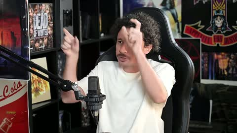
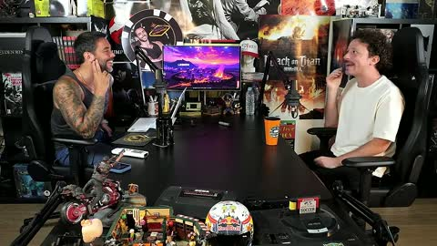
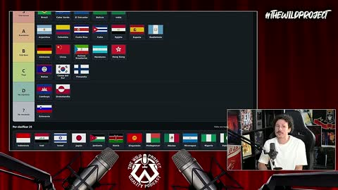
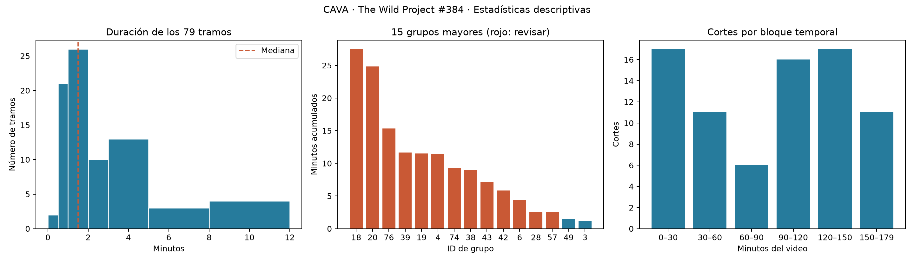
En este formato la imagen casi no cambia, así que la mayor parte de la estructura la aporta el texto. Los 13 grupos marcados para revisión cubren el 79.7 % del video y el mayor suma 27.5 minutos, lo que indica que en una charla larga los grupos salen demasiado amplios. El siguiente paso para este video es correrlo con el pipeline completo y el perfil de reunión.